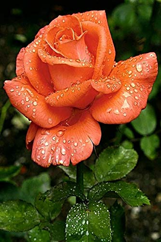
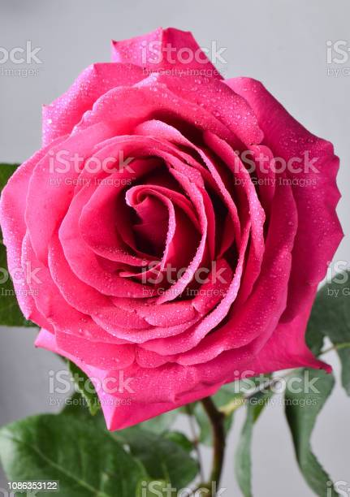
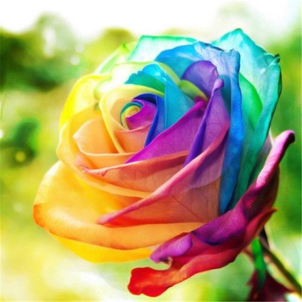
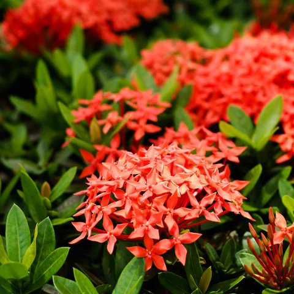
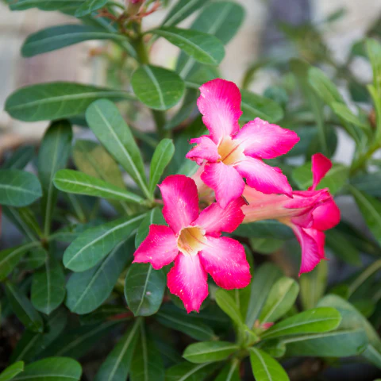
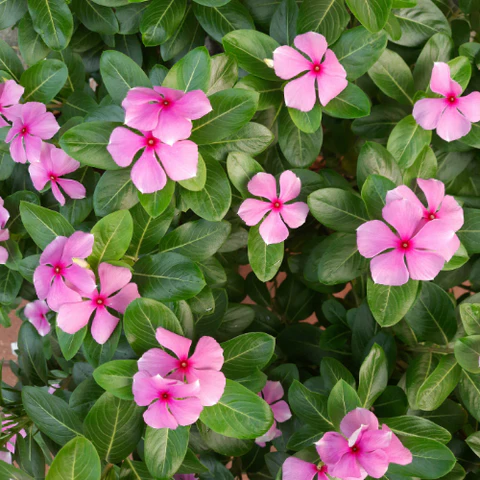

Qu:-5 What are different types of lists in HTML? With Example.
Answer: There are Three types of lists in html.
- Ordered List
- Unordered List
- Description List
◉ Orderd list
↣ Ordered list used for arranging a numbered list in ascending & decending manner.
↣ There aretwo tags used in ordered list.
1)<ol> </ol > -- ordered list start with this tag.
2)<li> </li> -- This tag used for list the item.
↣ The list items will be marked with numbers by default.
↣ One example of this list given below;
Indian Festivals
- Uttarayan
- Holi
- Raksha bandhan
- Janmashtmi
- Ganesh Chaturthi
- Navratri
- Dussehra
- Diwali
- Christmas
◉ Unordered List
↣ This List Used when you don't want to arrange the list into order formate.
↣ There aretwo tags used in ordered list.
1)<ul> </ul > -- ordered list start with this tag.
2)<li> </li> -- This tag used for list the item.
↣ The list items will be marked with bullets(small black circles) by default.
↣ One example of this list given below;
Useful Insects
- Apis(honey bee)
- Bombyx(slik worm)
- Laccifer(Lac insect)
- Ladybugs
- Butterfly
- Bees(Mason Bees)
- Soldier Beetles
- Fireflies
- Hoverflies
- Lacewings
◉ Descrition List
↣ This list is used to display data and their definition .
↣ There arethree tags used in ordered list.
1)<dl> </dl > -- ordered list start with this tag.
2)<dt> </dt> -- This tag used to give title of the item.
3)<dd> </dd> -- This tag used to give defination and discriptionof the item.
↣ One example of this list given below;
Colorful Species Of Rose Flower
- ◉Orange Rose
- 
↣ these beautiful roses have carved the world.
↣ The orange rose is a Grandiflora type with strong a Florence.
↣ It smells like a mild fresh apple.
↣ A deep golden yellow color is carried inside the petal of the rose with a bronzy orange-red backside.
-
- ◉Light Pink Rose

↣ A light pink rose is one of the beautiful roses that can be found in India.
↣ The other name of the same as Bonica.
↣ It is a type of shrub with no scent or smell.
↣ Also, it has the tolerance to disease-resistant, i.e. it is free from intoxication.
- ◉Two Tone Red Rose

↣ It is again a Grandiflora type rose which is having white petals edged with red.
↣ Here, red is considered as a dominant color if seen from a distance.
↣ Also, it resembles the features of ‘Cherry Parfait’.
- ◉Crimason Rose
- 
↣ It is also called ‘Falstaff’ with crimson color and double boom nature.
↣ The crimson rose is recommended by one of the top rose breeder David Austin.
↣ It is a type of Grandiflora rose with some strong fragrance all around.
↣ Moreover, the crimson color looks too beautiful on it and makes it suitable for public view.
- ◉ Multicolor Rose
- 
↣ This rose has a festive color with a mix of orange-pink and yellow colors.
↣ The multicolor property is also called ‘Mardi Gras’.
↣ It is recommended for hedges and has a peppery fragrance.
↣ The yellow base of the rose looks cool with 4-inch bright orange and pink bloom, which begins as an apricot bud.
◉ Nestend List
↣ This list is useful to create one list in other list.
↣ one example of this list given below;
12 month flowering plant
- Ixora Flower Plant

-
◉Scientific name
- ↣ Ixora coccinea
- ◉ Use of flowering plant
- ↣ Ixora plants are often used in landscaping to add color and beauty to gardens, parks, and public spaces.
↣ In traditional medicine, certain parts of the Ixora plant, such as the roots and leaves, are used for various medicinal purposes.
↣ Ixora flowers make lovely cut flowers and are often used in floral arrangements and bouquets.
- Desert Rose

- ◉Scientific name
- ↣ Adenium obesum
- ◉ Use of flowering plant
- ↣ Desert Rose is primarily grown as an ornamental plant due to its striking appearance.
↣ The Desert Rose produces beautiful trumpet-shaped flowers in a variety of colors, including shades of pink, red, white, and purple.
↣ In traditional medicine, various parts of the Desert Rose plant, such as the roots, leaves, and sap, have been used for their potential medicinal properties.
- Rose Periwinkle

- ◉Scientific name
- ↣ Catharanthus roseus
- ◉ Use of flowering plant
- ↣ It has been used for centuries as a dye for clothing and medicine.
↣ Rose Periwinkle is also cultivated as an ornamental plant for its attractive and colorful flowers.
↣ In traditional medicine, Rose Periwinkle has been used to treat various ailments such as diabetes, high blood pressure, and malaria.
↣ The nectar-rich flowers of Rose Periwinkle attract butterflies, making it a valuable addition to butterfly gardens or any landscape aiming to support pollinators.